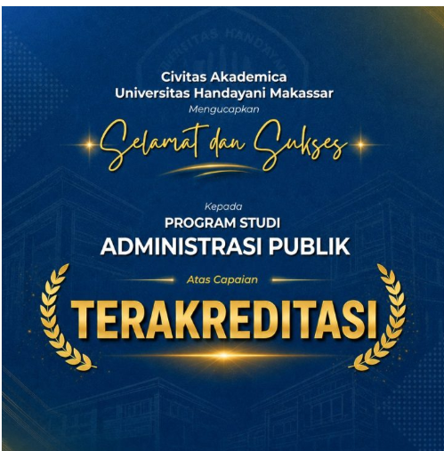

Makassar, 5 Mei 2026 – Kabar membanggakan kembali datang dari Universitas Handayani Makassar. Program Studi Administrasi Publik secara resmi berhasil meraih status terakreditasi sebagai bukti komitmen institusi dalam menjaga mutu pendidikan tinggi.
Keberhasilan ini merupakan hasil kerja sama seluruh Civitas Academica Universitas Handayani Makassar dalam meningkatkan kualitas layanan akademik, tata kelola program studi, serta pengembangan sumber daya manusia yang unggul.
Status terakreditasi menjadi jaminan bahwa Program Studi Administrasi Publik telah memenuhi standar nasional pendidikan tinggi sesuai dengan ketentuan lembaga akreditasi yang berwenang.
Rektor Universitas Handayani Makassar menyampaikan apresiasi kepada seluruh pimpinan, dosen, tenaga kependidikan, dan mahasiswa atas kerja keras yang telah dilakukan hingga berhasil memperoleh capaian tersebut.
Dengan diraihnya status akreditasi ini, Universitas Handayani Makassar semakin optimis dalam mencetak lulusan Administrasi Publik yang kompeten, profesional, dan memiliki daya saing tinggi di tingkat nasional maupun internasional.
Ke depan, Program Studi Administrasi Publik berkomitmen untuk terus mengembangkan kurikulum yang relevan dengan kebutuhan sektor publik serta mendukung terciptanya lulusan yang mampu memberikan kontribusi nyata bagi pembangunan bangsa.
Administrasi Publik, Akreditasi Prodi, Mutu Pendidikan, Universitas Handayani Makassar, UHM